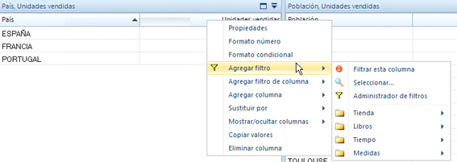
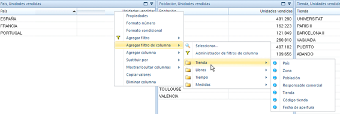
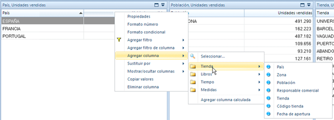
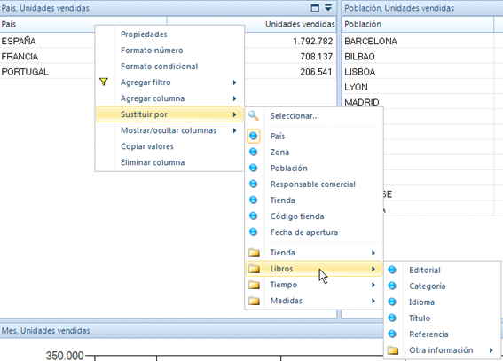
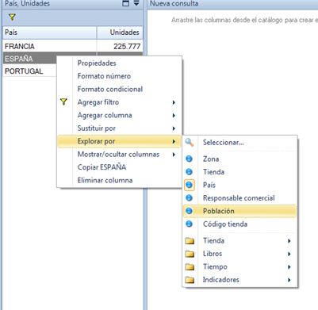
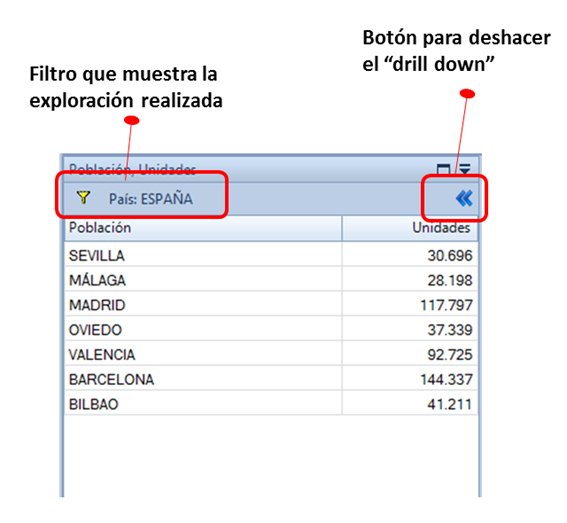

En este apartado se describen las funcionalidades de Bingo Intelligence para realizar análisis OLAP.
Estas acciones están accesibles a través del menú contextual que aparece haciendo clic en el botón derecho del ratón.
Filtros de consulta
Un “filtro de consulta” afecta sobre toda la información de la consulta. De este modo, si añades el filtro “Año 2012”, el panel sólo tendrá información del año 2012.
Se puede agregar un filtro seleccionando cualquier dimensión del catálogo (en el menú contextual aparece todo el catálogo):

Filtros de columna
Un filtro de columna afecta exclusivamente a una columna del panel. De este modo, por ejemplo, es posible comparar las “Ventas de España” con las “Ventas resto Europa”
Los filtros de columna sólo es posible aplicarlos sobre indicadores (y no sobre dimensiones).
También se añaden desde el menú contextual:

Agregar/sustituir columnas
En el menú contextual también aparecen opciones para agregar a la consulta cualquier objeto del catálogo:

También es posible cambiar el nivel de detalle de la consulta. La opción “Sustituir” del menú contextual te permite cambiar unas columnas por otras:

Drill down
Haciendo clic con el botón derecho del ratón sobre una fila de la consulta, aparece la opción de “Explorar por”. Esta opción agrega un filtro y sustituye una columna por otra. Es decir, es posible profundizar en la información del 2012, viendo los datos para cada uno de los trimestres del 2012. O se puede profundizar en las ventas de España, viendo los datos desglosados por las poblaciones de España.
Este tipo de análisis es el que se conoce como “Drill down”:

Al profundizar en la información, aparecen unos botones en la parte superior del panel que permiten modificar o deshacer la navegación:

OLAP “estructural”
Las opciones anteriores muestran las posibilidades de OLAP tradicional. Gracias a estas características, es posible ajustar una consulta para que muestre exactamente lo que necesitamos.
Sin embargo, podemos utilizar las posibilidades de crear informes dinámicos de Bingo Intelligence para mostrar la misma información, con todas sus posibilidades analíticas, pero sin modificar la estructura de ninguna tabla.
Por ejemplo, es muy fácil crear un informe con tres paneles y que nos muestre la información por años, por trimestres, y por meses. Si creamos las dependencias entre esos tres paneles, tendremos un informe dinámico que permitirá el acceso rápido y fácil a cualquier nivel de detalle.
Este es otro tipo de análisis OLAP que está implícito en todos los informes de Bingo Intelligence.